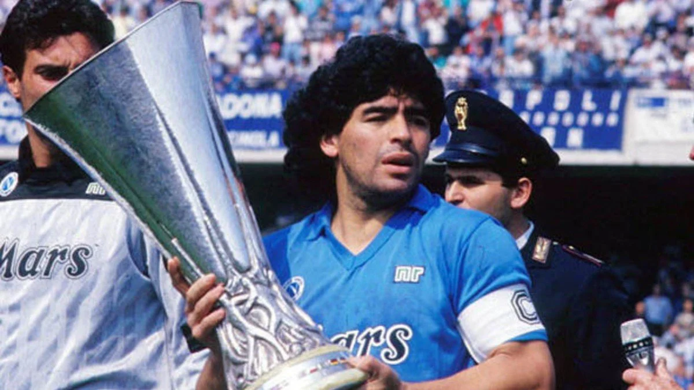
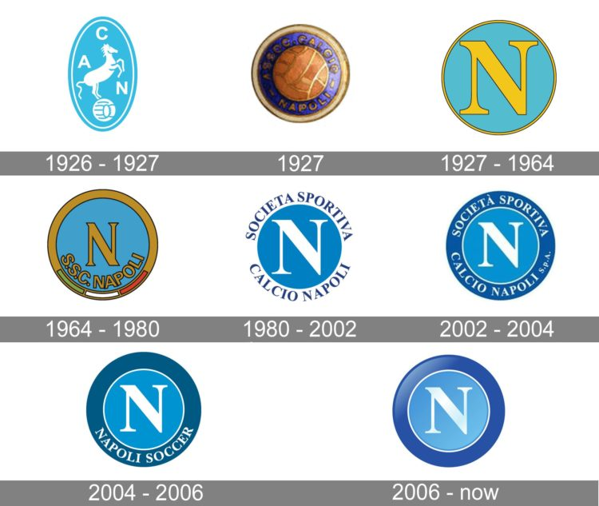

Historia del Napoli

La llegada de Diego Maradona al Napoli en 1984 marcó un antes y un después para el club. Durante su tiempo en el equipo, Maradona logró conquistar la Serie A y la Copa de la UEFA, llevando al Napoli a la gloria internacional.
En este video puedes ver los mejores momentos de Maradona con la camiseta del Napoli, recordando sus mayores logros y la conexión con los aficionados.

El Napoli es uno de los equipos más representativos del fútbol italiano. Con un gran legado histórico, ha sido hogar de numerosos campeones y leyendas del fútbol, como Diego Maradona y Lorenzo Insigne.
Este video resume los momentos más importantes de la historia del club, desde sus comienzos hasta su consolidación como uno de los equipos más importantes de Italia.